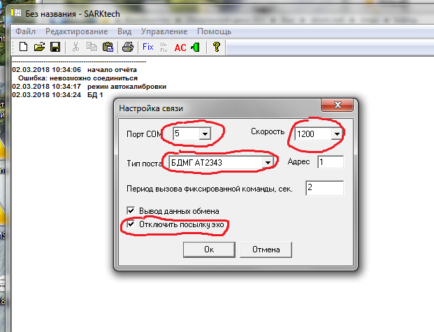

БДМГ-АТ2343. Как посмотреть работу каждого счетчика
Через SARKtech нет возможности посмотреть работу каждого счетчика отдельно, а это необходимо, чтобы, например, выявить неработающий счетчик или счетчик с некорректными параметрами. Для этого нужно:
- Открыть старый SARKtech 
- Нажать "Счет/измер."
- Нажать "Fix"
- И теперь уже нажать "Счет/измер."